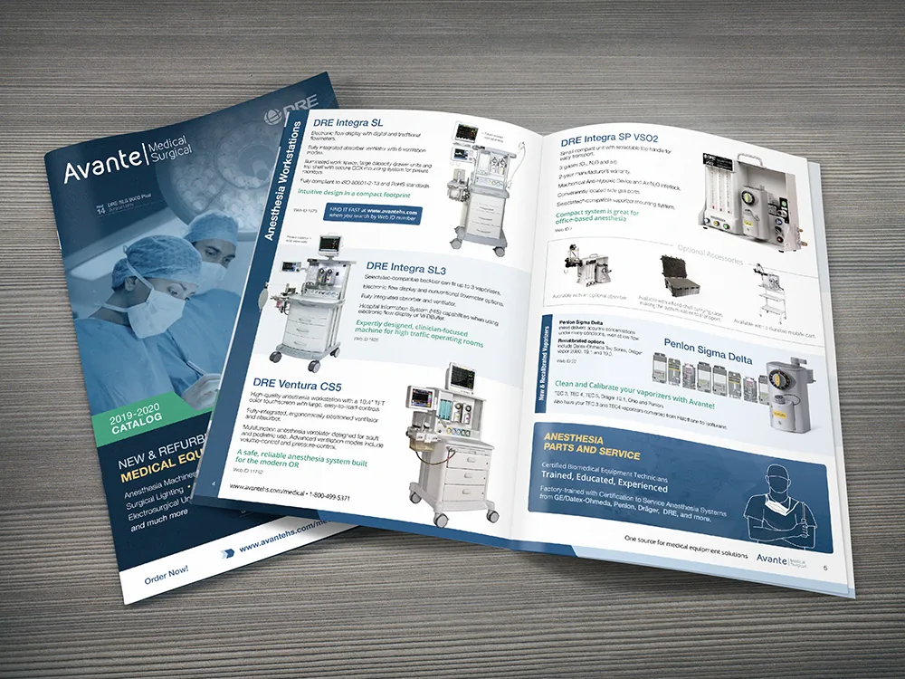

Did you know that around 65% of people are visual learners? Studies show that we retain up to 80% of what we see and do, compared to just 20% of what we read and 10% of what we hear. This makes visual learning a powerful tool, not just for understanding complex information but for enhancing creativity and problem-solving skills. In fact, visual aids have been shown to improve productivity and efficiency by 43% in the workplace.
So, In the world of Medical Equipment Planning, it’s not enough to just know the technical specs of equipment or how to place them in a room. You need a creative eye, the ability to imagine spaces, and an understanding of how to blend functionality with aesthetics. This is where "visual learning" comes in—a concept I’ve borrowed from the world of graphic design.
Drawing Inspiration from Graphic Design
The idea of visual learning is deeply rooted in the field of graphic design, where professionals constantly engage with visual elements to stay inspired and create impactful designs. I’ve adopted this concept into my work as a Medical Equipment Planner because I believe that, just like in graphic design, staying visually engaged is essential for innovation and excellence in any field. In my opinion, anyone in any job should develop this skill. Visual learning helps you not only stay updated but also make more informed, creative decisions in your work.
Graphic Designer
Why Staying Updated Matters
As a Medical Equipment Planner, my job requires me to stay on top of the latest trends in medical equipment design and hospital interiors. This constant awareness allows me to place equipment in a way that not only ensures operational efficiency but also complements the overall design of the space. For example, placing electrical and gas outlets correctly is crucial—not just for their function but also to maintain the room’s aesthetic appeal.
Visual Learning: Beyond the Catalogs
Reading equipment catalogs and keeping up with the latest technological advancements is just the start. Catalogs provide a quick and convenient summary of each device, highlighting key features and technologies in a simplified manner. This allows me to get an overview of new equipment and its capabilities without diving into technical details immediately. When I have more time, I delve into the technical specifications to understand the full scope of each device.
In addition to catalogs, I make it a point to engage with 3D renderings, follow industry experts on platforms like LinkedIn and Pinterest, and stay curious about the latest developments in my field. This "visual nutrition" gives me a broader perspective and sharpens my ability to analyze and imagine, which in turn boosts my creativity and problem-solving skills.

Medical Device Catalog
Putting Visual Learning into Practice
To make the most of this visual learning, I use a few strategies. I’ve created a folder on Pinterest where I save images and layouts of hospital designs. I regularly visit sites like Healthcare Snapshot to get the latest updates, and I subscribe to newsletters focused on medical technology. I also follow equipment manufacturers and keep an eye on their projects and innovations.
Interestingly, I’ve even found that watching medical TV shows like ER, Dr. House and The Good Doctor helps me understand the layout of hospital rooms and how equipment is placed in real-life scenarios. It might sound unusual, but it’s been surprisingly insightful.
The Results: Enhanced Creativity and Problem-Solving
By continuously engaging in this process of visual learning, I’ve noticed a significant improvement in my creativity and ability to solve complex problems. The more I expose myself to different visual ideas, the better I become at making design decisions that meet both functional and aesthetic goals.
Final Thoughts: Embrace Visual Learning
If you work in a similar field, I encourage you to embrace the idea of visual learning. Stay curious, follow reliable sources, and never stop learning from the world around you—whether it’s from an equipment catalog or a scene from a TV show. This approach has made a world of difference in my work, and I’m confident it can do the same for you.